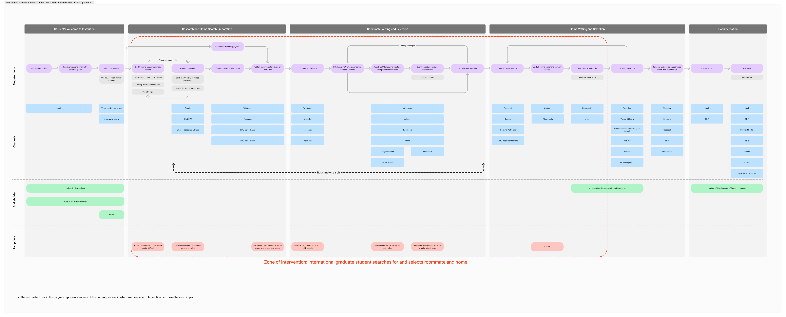

International student experienceThe time paradox
A field research project on international student housing that surfaced a deeper systems problem: students were doing the more emotionally urgent search first, and the more time-sensitive search second.
What changed: reframed the problem from “finding housing” to “sequencing under uncertainty.”